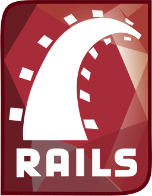
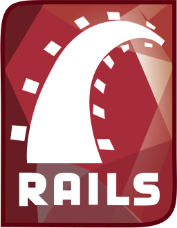

HEY THERE
An aspiring Sydney-based Web Developer now looking to earn his stripes working in the field of Web Development!
Having first experienced HTML and CSS in 2013 by tinkering and wading through unreadable lines of countless Tumblr themes, I spent all my time unreliably self-teaching Javascript and furthering my knowledge of Front-End Web Development. But since then I've completed a Web Development Immersive program at General Assembly which has properly introduced me to all things Front and Back end in the field of Web Development.
If you think you can quench my thirst for web creativity and functionality, you can most certainly try.
SKILLS
Adding more and more by the second:


 

PROJECTS

Tic Tac Toe
Simple Tic Tac Toe app developed completely in JavaScript. The project was developed as an assessment to my understanding of the course and it's material so far. With all the numerous but small features, I believe they add a small kind of charm for something that could be potentially dull.
Drink Drank Drunk
'Drink Drank Drunk' is a Ruby on Rails app which aims to determine which beer tastes the best. The app allows users to sign up and from there they possess their own personal 'list' in which they are able to add the beers and how many they've consumed and more importantly, the rating of the drink. Users who have not signed up are able to view information on each individual beer as well as it's average rating based on all the users who have rated that particular drink. A simple app on first glance however due to the many working parts and components, proved incredibly difficult to develop.
General Assembly Student Blog
The 'General Assembly Student Blog' or 'GAS' is a blogging platform that I developed along with classmates Alan Wright and Chris Barnaby. Primarily a Rails app, it aims to solve the problem forced onto GA students which is the uncertainty on which blogging platform to use to document their course progression. Users are added via an admin (most likely the Course Producer) and from there their LinkedIn, Twitter, Slack and/or Github information are displayed on their profile. Students can view other classes and their students to see their progression and opinions on the material of the course and the course itself.
Which 'Wich?
'Which 'Wich?' is an intentionally silly app primarily built with three.js. Aimed to display sandwich ingredients in 3D as well as fly and rotate them along their own specific paths, the app really only served as a challenge to learn a completely foreign library and make something creative, goofy and fun; a goal I proposed to myself before starting the course. This project was created collaboratively withStella Halena.